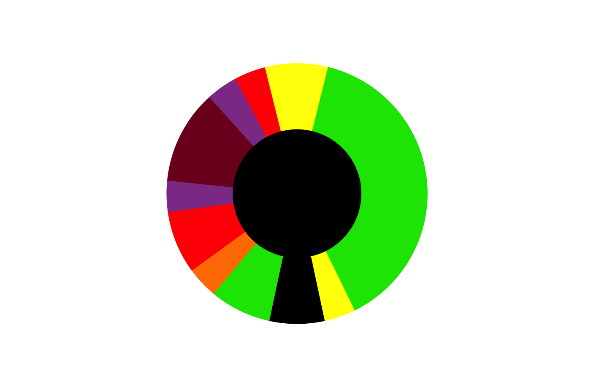

Create a "clock plot" showing PM2.5 data for a single day for the given monitors. A colored bar curves around in a clockwise manner with 12/4 of the bar colored for each hour of the local time day.
clockPlotBase(ws_monitor, startdate = NULL, enddate = NULL, title = "", centerColor = "black", gapColor = "black", gapFraction = 1/25, plotRadius = 1, dataRadii = c(0.5, 1), shadedNight = FALSE, hoursPerTick = NULL, solarLabels = FALSE, colorPalette = aqiPalette("aqi"))
| ws_monitor | ws_monitor object containing a single monitor. |
|---|---|
| startdate | Desired start date (integer or character in Ymd format
or |
| enddate | Desired end date (integer or character in Ymd format
or |
| title | Optional title for the plot. |
| centerColor | Color used for the center of the circle. |
| gapColor | Color used for the day-break gap. |
| gapFraction | Fraction of the circle used as the day boundary gap. |
| plotRadius | Full radius of the plot. |
| dataRadii | Inner and outer radii for the data portion of the plot [0:1]. |
| shadedNight | Add nighttime shading. |
| hoursPerTick | Add tick marks every # hours. Defaults to no ticks. |
| solarLabels | Add sunrise/sunset labels. |
| colorPalette | Palette function to convert monitor values into colors. Room for annotations can be created by setting TODO: More documentation |
A **ggplot** plot object with a "clock plot" for a single monitor.
ws_monitor <- PWFSLSmoke::Carmel_Valley startdate <- "2016-08-07" clockPlotBase(ws_monitor, startdate)